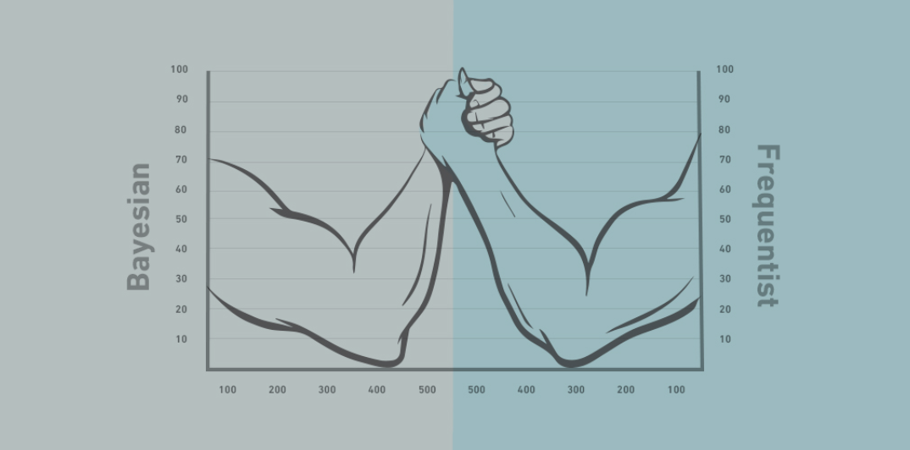
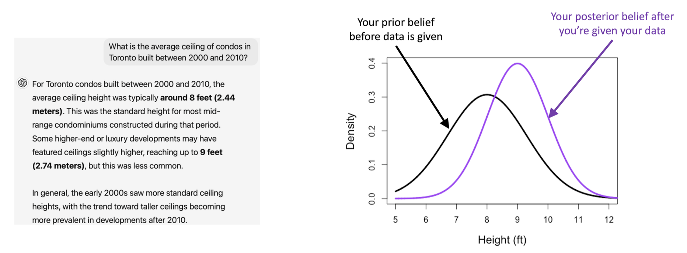
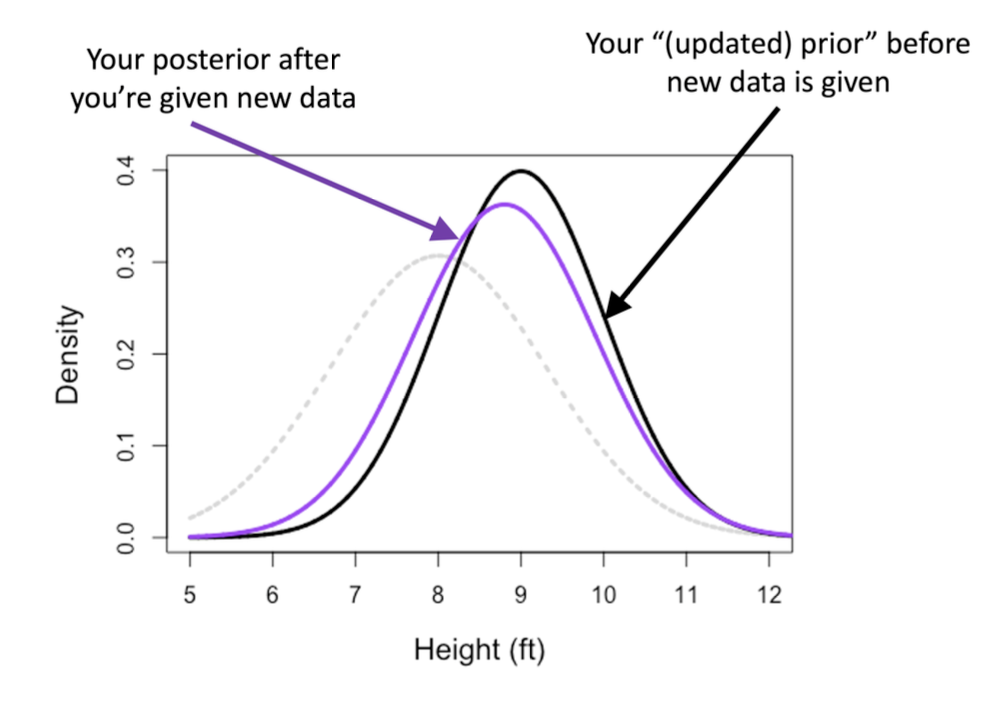
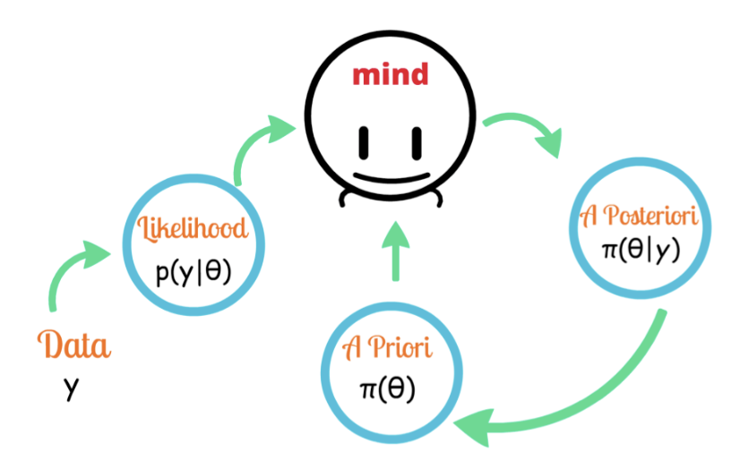
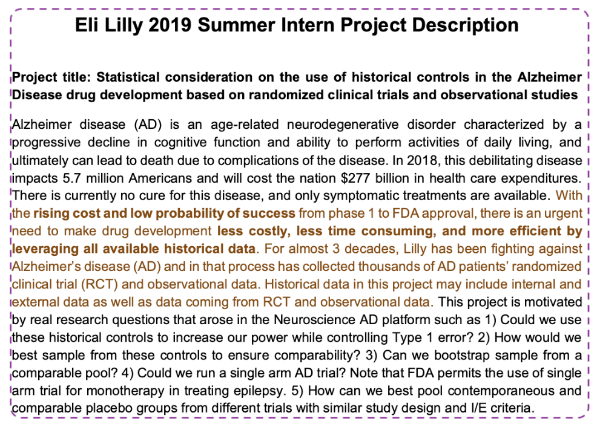
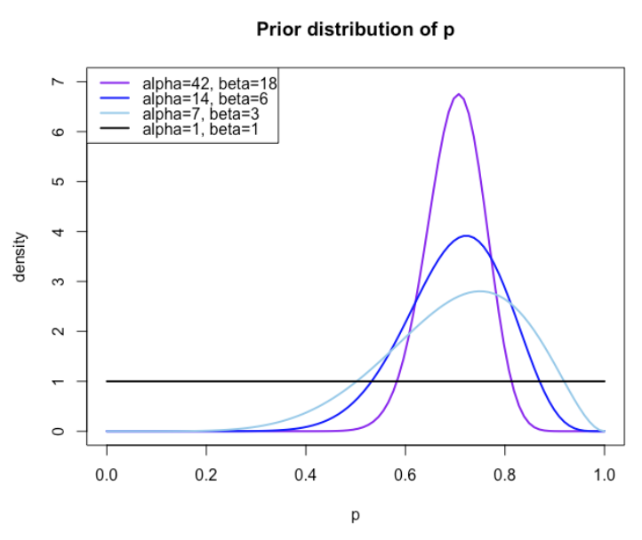
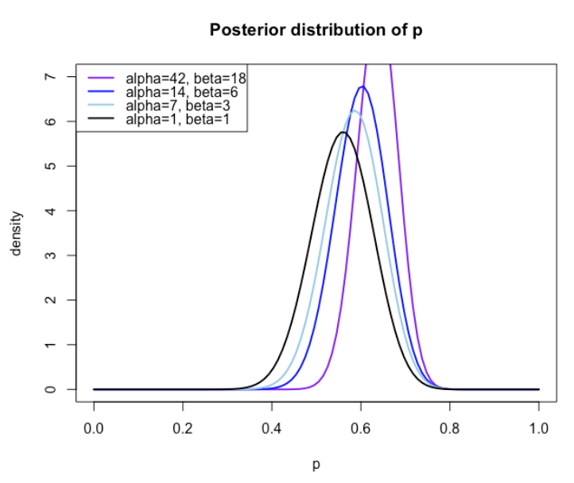
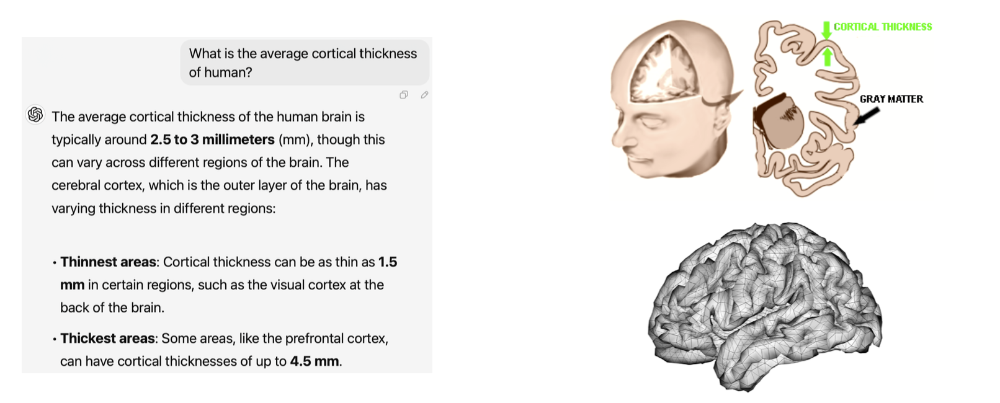

Week 9
Want to learn more? STA365: Applied Bayesian Statistics
Gauss-Markov Theorem:
Maximum likelihood:
So far, we were mostly interested in comparing the variance of different estimators that are (nearly) unbiased.
This lecture investigates whether potentially biased estimators could be useful.
Frequentist vs Bayesian

“I use data only to estimate parameters.”
“I believe the probability that \(\mu\) is between -3 and 4 is 70%”
Example: ‘your belief’ on average condo ceilings in Toronto

Example: ‘your updated belief’ when you’re given ‘new’ dataset

prior belief (\(\mu\approx 9.2\)) + new data (\(y_{21},\ldots,y_{30}\)) \(\Rightarrow\) new belief (\(\mu\approx 9.05\))
(The prior belief is from initial prior + \(y_1,\ldots,y_{20}\).)

“I have prior belief on parameters. Once data is given, I use it to update my belief. Based on my updated belief, I choose the most probable value.”
² Figure adapted from https://freshbiostats.wordpress.com/

\[ p(\text{parameter}\mid\text{data})=\frac{p(\text{data}\mid\text{parameter})\times p(\text{parameter})}{p(\text{data})}. \]
where \(p\) denotes for any probability distribution function (pdf) (or probability mass function (pmf)).
Bayes Rule
\[y_i\overset{\text{i.i.d.}}{\sim}N(\mu,\sigma^2)\tag{1}\]
Frequentists use this information to estimate parameters (e.g., \(\mu\) and \(\sigma^2\) in this example).
Bayesian uses additional probability models for parameters to reflect subjective belief. For example,
\[\mu\sim N(\theta,\tau^2)\tag{2}\]
Then use (1) and (2) to update your belief with data (posterior).
Marginalized model
\[ \begin{aligned} E[\mathbf y]&=E[E[\mathbf y\mid\mu]]=E[\mu \cdot \mathbf1]=\theta \cdot \mathbf1\\ \operatorname{Var}[\mathbf y]&=\operatorname{Var}(E[\mathbf y\mid\mu])+E(\operatorname{Var}[\mathbf y\mid\mu])\\ &=\operatorname{Var}(\mu \cdot \mathbf1)+E(\sigma^2I)\\ &=\tau^2\mathbf1\mathbf1^T+\sigma^2I. \end{aligned} \]
\[\operatorname{Var}(\mathbf y)=\begin{pmatrix} \tau^2+\sigma^2&\tau^2&\cdots&\tau^2\\ \tau^2&\tau^2+\sigma^2&\cdots&\tau^2\\ \vdots&\vdots&\ddots&\vdots\\ \tau^2&\tau^2&\cdots&\tau^2+\sigma^2 \end{pmatrix}\ \Rightarrow\ \text{Not independent anymore}.\]
\[ \begin{aligned} p(\mu\mid\mathbf y)&\propto\underbrace{p(\mathbf y\mid\mu)}_{\text{likelihood}}\times\underbrace{p(\mu)}_{\text{prior}}\\ &\propto\exp\!\left[-\frac{n}{2\sigma^2}(\mu^2-2\bar y\mu)\right]\exp\!\left[-\frac{(\mu-\theta)^2}{2\tau^2}\right]\\ &\propto\exp\!\left[-\frac12\left(\frac n{\sigma^2}(\mu^2-2\bar y\mu)+\frac1{\tau^2}(\mu^2-2\theta\mu+\theta^2)\right)\right]\\ &\propto\exp\!\left[-\frac12\left(\left(\frac n{\sigma^2}+\frac1{\tau^2}\right)\mu^2-2\left(\frac{n\bar y}{\sigma^2}+\frac\theta{\tau^2}\right)\mu+\frac{\theta^2}{\tau^2}\right)\right]\\ &\propto\exp\!\left[-\frac1{2b^2}(\mu-a)^2\right] \end{aligned} \]
where
\[a=\frac{\sigma^2\theta+n\tau^2\bar y}{\sigma^2+n\tau^2},\qquad b^2=\frac{\sigma^2\tau^2}{\sigma^2+n\tau^2}.\]
\[\mu\mid\mathbf y\sim N\!\left(\frac{\sigma^2\theta+n\tau^2\bar y}{\sigma^2+n\tau^2},\frac{\sigma^2\tau^2}{\sigma^2+n\tau^2}\right)\]
so that a reasonable estimator of \(\mu\) would be its posterior mean:
\[\hat\mu_{\text{bayes}}=\frac{\sigma^2\theta+n\tau^2\bar y}{\sigma^2+n\tau^2}.\]
\[E[\hat\mu_{\text{bayes}}]=E\!\left[\frac{\sigma^2\theta+n\tau^2\bar y}{\sigma^2+n\tau^2}\right]=\frac{\sigma^2}{\sigma^2+n\tau^2}\theta+\frac{n\tau^2}{\sigma^2+n\tau^2}\mu\ne\mu\]
unless \(\theta=\mu\).
\[\frac{\sigma^2\theta+n\tau^2\bar y}{\sigma^2+n\tau^2}=\underbrace{\frac{\sigma^2}{\sigma^2+n\tau^2}}_{w_1}\theta+\underbrace{\frac{n\tau^2}{\sigma^2+n\tau^2}}_{w_2}\bar y.\]
Notes
\[\mu\sim\operatorname{Unif}(-\infty,\infty)\ \Rightarrow\ p(\mu)=1.\]
We don’t have any prior information about \(\mu\) — we don’t assume anything.
\[p(\mu\mid\mathbf y)\propto p(\mathbf y\mid\mu)\times p(\mu)\propto\exp\!\left[-\frac1{2\sigma^2}\sum_{i=1}^n(y_i-\mu)^2\right]\times1\propto\exp\!\left[-\frac n{2\sigma^2}(\mu-\bar y)^2\right]\]
so that the posterior mean is just the sample mean.
³ Of course \(\operatorname{Unif}(-\infty,\infty)\) is not a valid probability distribution as it does not integral is \(\infty\) (not 1). However, it is considered as a valid prior in constructing the posterior distribution.
\[y_i\sim\operatorname{Bernoulli}(p)\]
\[E(X)=\frac\alpha{\alpha+\beta}\quad\text{and}\quad\operatorname{Var}(X)=\frac{\alpha\beta}{(\alpha+\beta+1)(\alpha+\beta)^2}\]

\[p\mid\mathbf y\sim\operatorname{Beta}\!\left(\alpha+\sum_{i=1}^ny_i,\ \beta+n-\sum_{i=1}^ny_i\right).\]

glm()\[p(\theta\mid\mathbf y)\sim \mathcal{AN}(\hat\theta_{\text{mle}},I(\theta))\]
More and more data points will dominate prior and the posterior mean \(\approx\) MLE.
Weakly informative (or even non-informative) priors can be used when no clear prior knowledge is available.
Advances in computational power and the development of efficient algorithms make Bayesian methods more accessible.
\[y_i=\mathbf x_i^T\boldsymbol\beta+\epsilon_i\qquad\text{where}\qquad\epsilon_i\overset{\text{i.i.d.}}\sim N(0,\sigma^2)\]
\[\beta_j\overset{\text{i.i.d.}}\sim N(0,\tau^2)\qquad\text{or, equivalently,}\qquad\boldsymbol\beta\sim MVN(0,\tau^2I)\]
Intuitively, we make a prior that the regression parameters \(\beta_1,\ldots,\beta_p\) are mostly centered around 0.
\[p(\boldsymbol\beta)\propto\exp\!\left(-\frac1{2\tau^2}\boldsymbol\beta^T\boldsymbol\beta\right)=\exp\!\left(-\frac1{2\tau^2}\sum_{j=1}^p\beta_j^2\right)\]
\[\begin{aligned} p(\boldsymbol\beta\mid\mathbf y)&\propto\exp\!\left[-\frac1{2\sigma^2}(\mathbf y-X\boldsymbol\beta)^T(\mathbf y-X\boldsymbol\beta)\right]\times\exp\!\left[-\frac1{2\tau^2}\boldsymbol\beta^T\boldsymbol\beta\right]\\ &\propto\exp\!\left[-\frac1{2\sigma^2}(\mathbf y-X\boldsymbol\beta)^T(\mathbf y-X\boldsymbol\beta)-\frac1{2\tau^2}\boldsymbol\beta^T\boldsymbol\beta\right]. \end{aligned}\]
\[(\mathbf y-X\boldsymbol\beta)^T(\mathbf y-X\boldsymbol\beta)+\lambda\boldsymbol\beta^T\boldsymbol\beta\qquad\text{where}\quad\lambda=\sigma^2/\tau^2.\]
Observation 1
\[(\mathbf y-X\boldsymbol\beta)^T(\mathbf y-X\boldsymbol\beta)+\lambda\boldsymbol\beta^T\boldsymbol\beta\qquad\text{where}\quad\lambda=\sigma^2/\tau^2\]
\[\sum_{j=1}^{n}\beta_j^2\le t\qquad\text{for some}\quad t>0\]
Therefore, Bayesian linear regression naturally prevents the model from overfitting the data, because it’s imposing restrictions about \(\beta_j\)s being too large. The degree of regularization depends on your prior variance \(\tau^2\).
Observation 2
\[(\mathbf y-X\boldsymbol\beta)^T(\mathbf y-X\boldsymbol\beta)+\lambda\boldsymbol\beta^T\boldsymbol\beta\qquad\text{where}\quad\lambda=\sigma^2/\tau^2\]
\[\operatorname{AIC}:\operatorname{SSE}(\boldsymbol\beta)+2\times\sum_{j=1}^p I(\beta_j\ne0)\]
\[\operatorname{BIC}:\operatorname{SSE}(\boldsymbol\beta)+\log(n)\times\sum_{j=1}^p I(\beta_j\ne0)\]
Observation 3
\[\hat{\boldsymbol\beta}_{\text{bayes}}=(X^TX+\lambda I)^{-1}X^T\mathbf y\qquad\text{where}\quad\lambda=\sigma^2/\tau^2\]
\[E[\hat{\boldsymbol\beta}_{\text{bayes}}]=(X^TX+\lambda I)^{-1}X^TX\boldsymbol\beta\ne\boldsymbol\beta\]
but what does \(\tau^2=\infty\) mean?
\[\begin{aligned} L(\boldsymbol\beta\mid\mathbf y)&=\prod_{i=1}^n\left(\frac{e^{\mathbf x_i^T\boldsymbol\beta}}{1+e^{\mathbf x_i^T\boldsymbol\beta}}\right)^{y_i}\left(\frac1{1+e^{\mathbf x_i^T\boldsymbol\beta}}\right)^{1-y_i}\\ &\propto\exp\!\left[\sum_{i=1}^n\left\{y_i(\mathbf x_i^T\boldsymbol\beta)-\log(1+e^{\mathbf x_i^T\boldsymbol\beta})\right\}\right]. \end{aligned}\]
\[p(\boldsymbol\beta\mid\mathbf y)\propto L(\boldsymbol\beta\mid\mathbf y)\times p(\boldsymbol\beta)\propto\exp\!\left[\sum_{i=1}^n\left\{y_i(\mathbf x_i^T\boldsymbol\beta)-\log(1+e^{\mathbf x_i^T\boldsymbol\beta})\right\}-\frac1{2\tau^2}\boldsymbol\beta^T\boldsymbol\beta\right]\]
\[-\sum_{i=1}^n\left\{y_i(\mathbf x_i^T\boldsymbol\beta)-\log(1+e^{\mathbf x_i^T\boldsymbol\beta})\right\}+\frac1{2\tau^2}\boldsymbol\beta^T\boldsymbol\beta\]
No closed form solution, which makes things more complicated.
What if our prior is incorrect?
\[ \hat\mu_{\text{bayes}} = \frac{\sigma^2}{\sigma^2+n\tau^2}\theta+\frac{n\tau^2}{\sigma^2+n\tau^2}\bar y. \]
What if the likelihood is misspecified?
\[Y_i\mid\lambda_i\sim\operatorname{Poisson}(\lambda_i),\qquad E(Y_i\mid\lambda_i)=\operatorname{Var}(Y_i\mid\lambda_i)=\lambda_i.\]
Posterior Predictive Checks
\[p(\mathbf y^{\mathrm{rep}}\mid\mathbf y)=\int p(\mathbf y^{\mathrm{rep}}\mid\boldsymbol\theta)\,p(\boldsymbol\theta\mid\mathbf y)\,d\boldsymbol\theta.\]
Note: Posterior predictive checks can reveal lack of fit; they do not prove a model is correct.
Choosing and evaluating a prior
The prior affects how strongly the data are regularized. For regression coefficients:
Consider whether the prior reflects reasonable knowledge about the parameters and how much shrinkage is appropriate.
Remedy: Compare sensible priors and assess whether substantive conclusions change.
Questions to ask before interpreting a Bayesian model:
\[p(\beta_j)=\frac1{2\tau}\exp\!\left(-\frac1\tau|\beta_j|\right)\]
which leads to \(p(\boldsymbol\beta)\propto\exp\left(-\frac1\tau\times\sum_{j=1}^p|\beta_j|\right)\).
\[\begin{aligned} p(\boldsymbol\beta\mid\mathbf y)&\propto\exp\!\left[-\frac1{2\sigma^2}(\mathbf y-X\boldsymbol\beta)^T(\mathbf y-X\boldsymbol\beta)\right]\times\exp\!\left[-\frac1\tau\sum_{j=1}^p|\beta_j|\right]\\ &\propto\exp\!\left[-\frac1{2\sigma^2}(\mathbf y-X\boldsymbol\beta)^T(\mathbf y-X\boldsymbol\beta)-\frac1\tau\sum_{j=1}^p|\beta_j|\right]. \end{aligned}\]
\[(\mathbf y-X\boldsymbol\beta)^T(\mathbf y-X\boldsymbol\beta)+\lambda\sum_{j=1}^p|\beta_j|\qquad\text{where}\quad\lambda=2\sigma^2/\tau\]
Example: Cortical thickness

\[\begin{pmatrix}\beta_1\\\beta_2\\\vdots\\\beta_V\end{pmatrix}\sim MVN\!\left(\begin{pmatrix}2.5\\2.5\\\vdots\\2.5\end{pmatrix},\Sigma\right)\]
where \(\Sigma[j,k]=\sigma^2\exp(-\phi d_{jk})\) and \(d_{jk}\) is the distance between two vertices \(j\) and \(k\).
\(\phi>0\) controls the degree of spatial correlation.
If \(d_{jk}\) is large, our prior specifies that the correlation between \(\beta_j\) and \(\beta_k\) is low.
If \(d_{jk}\) is nearly 0, our prior specifies that the correlation between \(\beta_j\) and \(\beta_k\) is nearly 1.
In practice, \(\phi\) is unknown \(\Rightarrow\) specify additional prior on \(\phi\)!
Bayesian inference combines observed data (likelihood) with prior information to obtain a posterior distribution:
\[p(\boldsymbol\theta\mid\mathbf y)\propto p(\mathbf y\mid\boldsymbol\theta)p(\boldsymbol\theta).\]
Bayesian estimators can introduce bias but may reduce variance, depending on the choice of prior.
Bayesian linear regression connects naturally to regularization:
Prior assumptions matter: the choice and strength of a prior affect parameter estimates, particularly with small samples.
Modelling considerations: assess prior sensitivity, check the appropriateness of the likelihood, and use posterior predictive checks to evaluate model fit.
Announcements: Assignment due tonight on Crowdmark!
Next Week: Random Effects Models